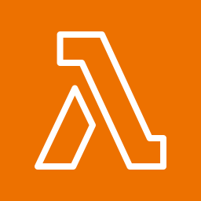

Terrablox
Cloud-Migrationen, die mit jeder Migration besser werden.
AI wird kein Differentiator mehr sein.
Jede Basistechnologie nimmt denselben Weg: erst Vorsprung, dann Voraussetzung.
Niemand gewinnt heute einen Pitch, weil er Internet hat. Mit AI wird es genauso sein.
Jeder wird die besten LLMs haben. Und die besten Harnesse.
Der einzige Unterschied sind die eigenen Daten.
LLM
CommodityHarness
CommodityDaten
Entstehen nur in der eigenen Arbeit – und sind nicht nachholbar.
DifferentiatorDie Daten von gestern sind der Wettbewerbsvorteil von heute.
Und wir sammeln noch so gut wie keine.
In Köpfen
Geht mit dem Projektende oder mit der Person.
In Slides und Tickets
Verstreut und lückenhaft. Jedes Projekt dokumentiert anders, nichts ist vergleichbar.
In Repositories
Das Ergebnis ist da. Der Weg dorthin und das Warum nicht.
Jede Migration ohne Aufzeichnung ist Wissen, das uns morgen fehlt.
Wie können diese Daten aussehen?
Hunderte Zeilen HCL
- Jedes Mal anders formuliert
- Kein gemeinsames Vokabular
- Kein Vorher, kein Nachher, kein Warum
Strukturierte Transformationen
- Ein festes Vokabular an Bausteinen und Schritten
- Ein definierter Ist- und Soll-Zustand
- Der Weg dazwischen, Schritt für Schritt
Struktur entsteht nicht beim Auswerten. Sie muss beim Erzeugen mitgedacht werden.
Terrablox ist erstmal auch nur ein Harness.
Aus einem Ist-Zustand wird ein Soll-Zustand.
Was ihr habt
- Application-Repository
- Dokumente und Anforderungen
- Oder eine Beschreibung
Agent im Harness
- Copilot-Seat
- Best Practices
- Toolset
- Guardrails
Was ihr bekommt
- Terraform in eurem Repository
- Deployt in euren AWS-Account
- Mit sichtbarer Kostenstruktur
Das LLM schreibt keinen Code. Es editiert ein Modell.
Best Practice aus dem Model-Driven Development
Üblichfrei generierend
Terrabloxmodellgetrieben
Best Practice Terraform-Modules
- VPC
- EC2
- RDS
- S3

Lambda- + 45 weitere
Knoten
Ein Terraform-Modul
Kanten
Ein Output geht in einen Input
Edits
Feste Operationen auf diesen Modulen
50 kuratierte Module. Weitere Kataloge folgen.
Der Agent erfindet keine Ressourcen. Er setzt aus Modulen zusammen.
Terrablox-Katalog heute
50 AWS-Module, sofort nutzbar.
Porsche CBBaC kommt
Die Cloud Building Blocks as Code.
MHP-Katalog kommt
Unsere eigenen Best Practices.
Eine Migration ist eine Folge von Transformationen auf dem Graphen.
Der Agent liest zuerst die Anwendung.
Jeder Turn wird als Transformation aufgezeichnet.
{ "prompt": "Migrate the linked application…", "settings": { model, budgets, tools }, "graphBefore": { nodes: [], edges: [] }, "graphAfter": { nodes: [5], edges: [5] }, "steps": [ thoughts, tool calls ], "mutations": [ add_module, connect, … ], "decisions": [ { choice, reason, alternatives } ], "migrationSource": { kind: "legacy", appRepo }, "commits": [ "4f2a9c1", … ], "pipelineConclusion": "success"}
-
Ist und Soll
Der Graph vor und nach dem Turn.
-
Der Weg
Jeder Gedanke, jeder Tool-Call, jeder Edit – in Reihenfolge.
-
Das Warum
Frage, Wahl, Begründung, verworfene Alternativen.
-
Die Quelle
greenfield, graph oder legacy – samt der gelesenen Dateien.
-
Prüfergebnis
Wie gut war das Ergebnis?
Mehr Migrationen. Mehr Daten.
Bessere Migrationen.
Aufzeichnen und bewerten
- Jeder verändernde Turn wird vollständig gespeichert
Gemeinsam lernen
- Zentraler MHP-Datensatz
- Ähnliche Migrationen als Kontext für neue
- Menschliches Feedback verbessert Regeln und Defaults
Der Datensatz wächst mit jeder Migration.
Probiert es aus. Baut mit.
Lokal ausprobieren.
Terrablox ist heute ein MVP und läuft auf eurem Rechner: klonen, ein Befehl, fertig.
Mitbauen.
Das Projekt ist Open Source. Issues, Pull Requests und Module sind willkommen.
Zentral bei MHP hosten. Nächster Schritt
Erst dann landen alle Migrationen in einem gemeinsamen Datensatz.
# klonen, dann: $ git clone https://github.com/t3bld/terrablox.git $ cd terrablox && pnpm quickstart # Dashboard: http://localhost:3001